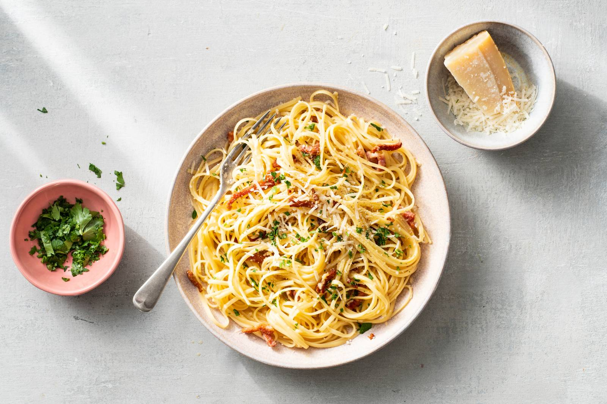

Pizza carbonara voor 1

Ingredienten
- 100g spaghetti
- 50 g gerookte spekreepjes
- Parmezaanse kaas
- 5 g verse platte peterselie
- 1 klein ei
Bereiding
- Kook de spaghetti volgens de aanwijzingen op de verpakking beetgaar. Giet af maar bewaar een kopje kookvocht. Bewaar de pasta van het vuur af. Verhit ondertussen een koekenpan zonder olie of boter en bak de spekreepjes op middelhoog vuur 5 min.
- Rasp ondertussen de kaas. Snijd de peterselie fijn. Klop het ei los in een kommetje. Voeg 15 g kaas toe en breng royaal op smaak met versgemalen peper.
- Voeg de spekreepjes inclusief het bakvet toe aan de pasta. Roer er het eimengsel door. Voeg als de pasta te droog is wat kookvocht toe. Verdeel de pasta over een diep bord. Bestrooi met de peterselie en de rest van de kaas.